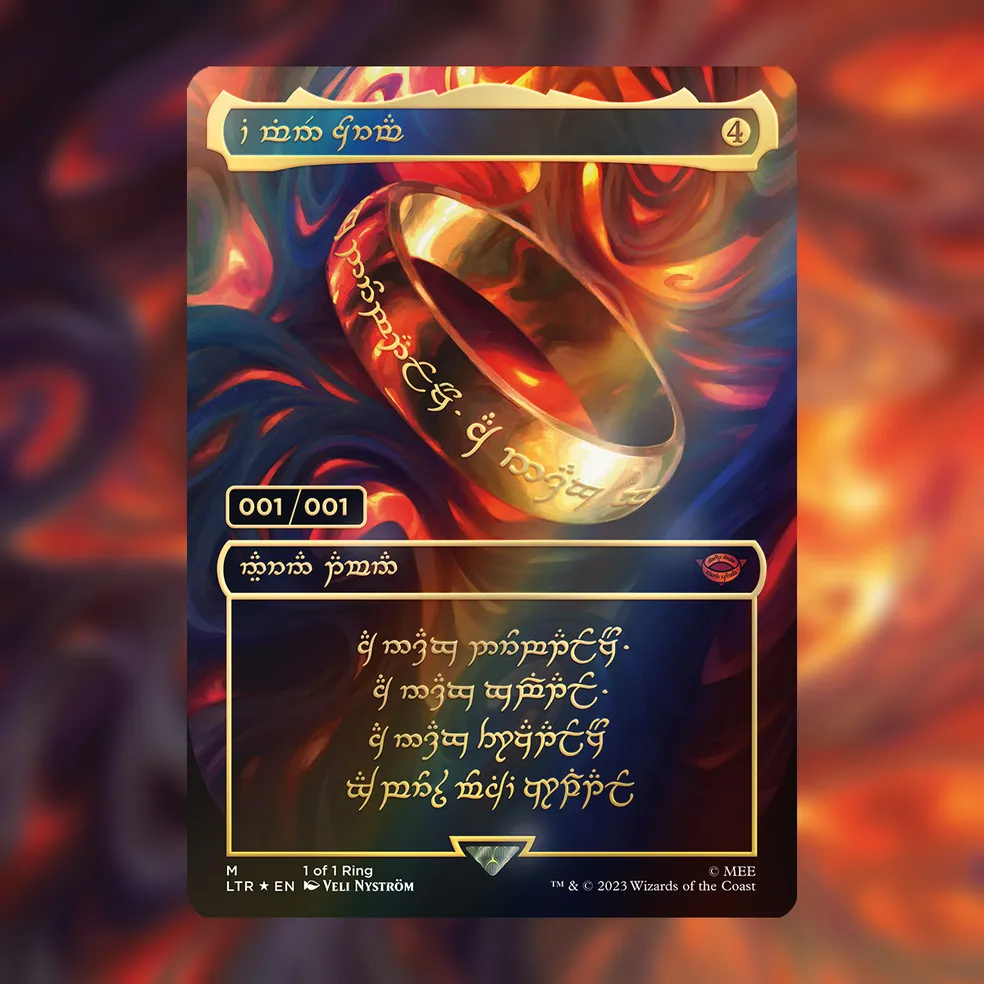
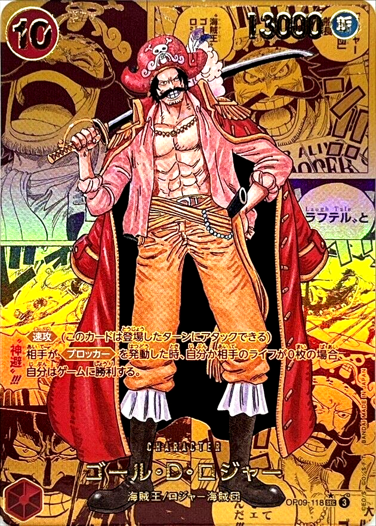
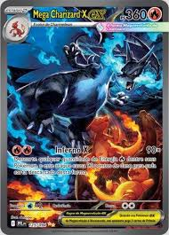
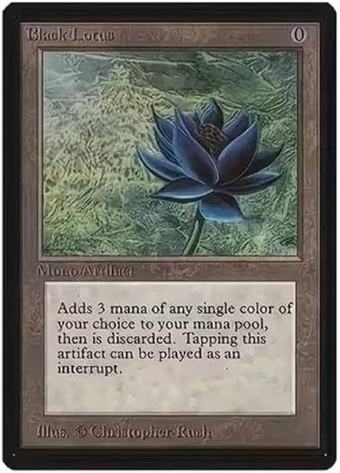
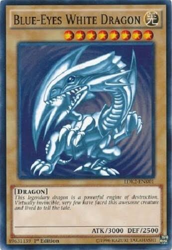

O Um Anel

Magic: The Gathering
Mítica
Artefato lendário da Terra-média, criado para conceder ao seu portador um poder extraordinário. Um dos itens mais perigosos de seu universo, cuja posse pode alterar o destino de quem o encontra.

Mítica
Artefato lendário da Terra-média, criado para conceder ao seu portador um poder extraordinário. Um dos itens mais perigosos de seu universo, cuja posse pode alterar o destino de quem o encontra.

Secret Rare
O lendário Rei dos Piratas e capitão dos Piratas Roger. Conhecido por ter conquistado a Grand Line e alcançado o lendário tesouro One Piece, sua execução marcou o início da Grande Era dos Piratas. Sua história e seu legado continuam influenciando inúmeros piratas em busca de liberdade e aventura.

Ilustração Rara Especial (SIR)
Uma das cartas mais marcantes da coleção Fogo Fantasmagórico, apresentando o lendário Charizard em uma ilustração especial de Arte Rara. Seu visual diferenciado e sua popularidade entre os fãs de Pokémon fazem desta carta um item muito desejado por jogadores e colecionadores.

Rara Mítica
Uma das cartas mais famosas e cobiçadas de Magic: The Gathering. Conhecida por sua enorme importância na história do card game, a Black Lotus tornou-se um dos maiores símbolos de poder, raridade e valor entre colecionadores.

Ultra Rara
Uma das cartas mais icônicas de Yu-Gi-Oh!, conhecida por seu enorme poder de ataque e por sua presença marcante na história do card game. Associado a um dos monstros mais poderosos e reconhecidos da franquia, o Blue-Eyes White Dragon tornou-se uma carta extremamente popular entre jogadores e colecionadores.